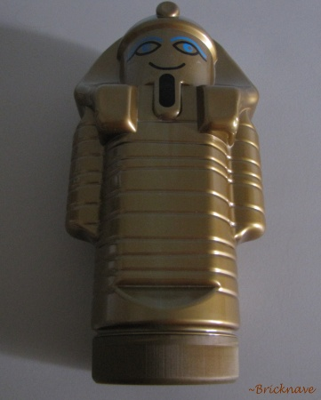
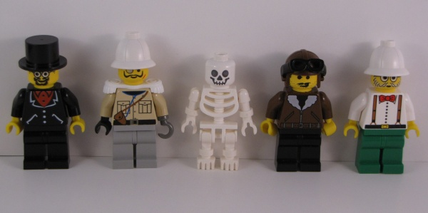
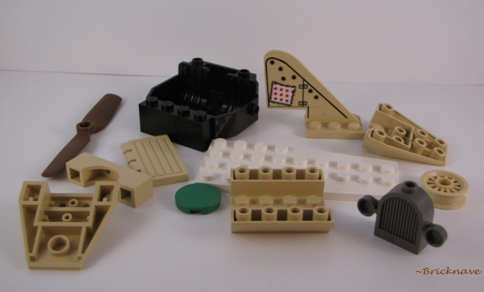
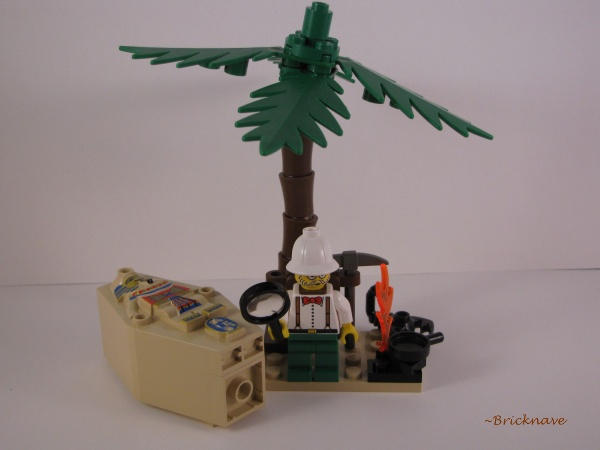
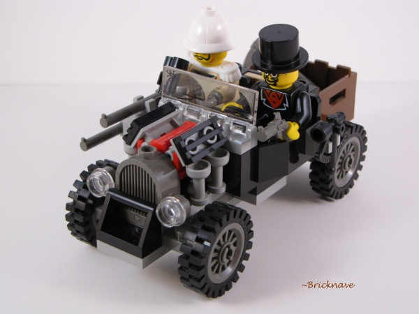
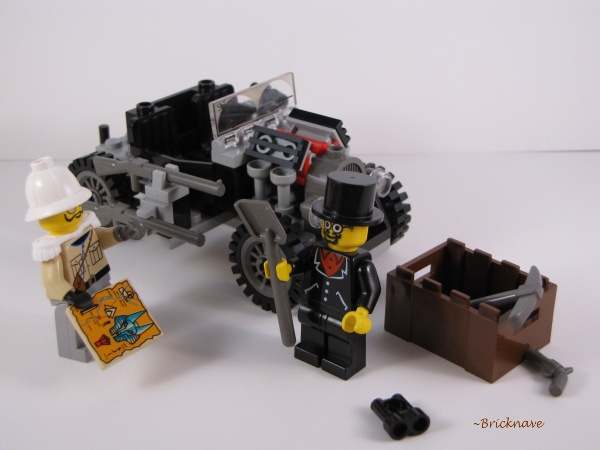
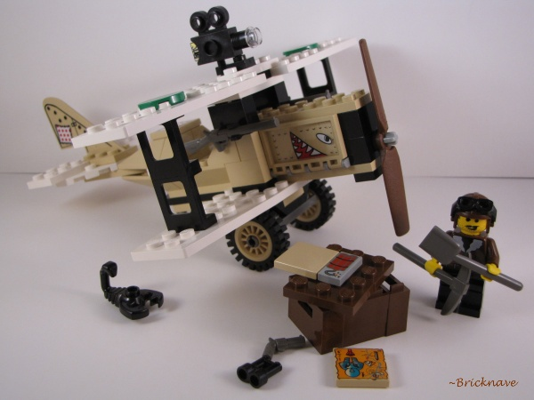
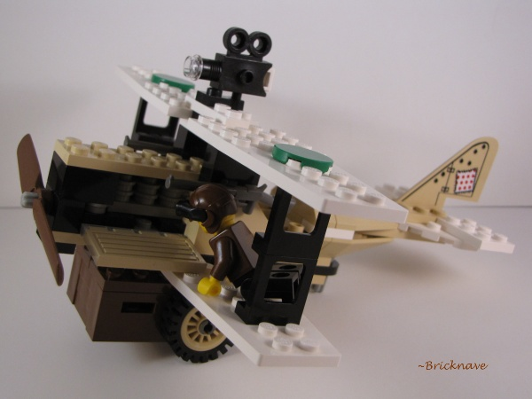
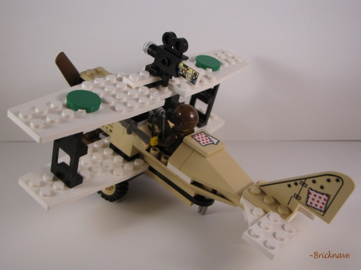

Set Name: Treasure Raiders
Set Number: 5909
Theme: Adventurers
Year released: 1998
Piece Count: 192
Minifigures Included: 5
Price: Set no longer sold in stores, price may very if purchased from the internet.
Additional info: Set has a twin named "Desert Expedition" with the set number 5948.
The twin set does not include limited edition mummy-shaped storage case.
-The Mummy-shaped LEGO storage case-

It is good to use if you need a clean place to store bricks, and makes a great collector's item.
-The Minifigures-

Four adventurers and one skeleton.
-Interesting bricks-

In my opinion, these are the most interesting bricks found in the set. Some of the decals on the bricks are stickers.
-The Camp-

There isn't much about it that makes it special, except for the printed-decal sarcophagus.
-The Jeep-


A very good model, considering that it is one of the very few set models that have a black jeep cabin brick.
The side-mounted rifle turret is also a nice touch, but it makes the jeep look more like a WW1 combat
vehicle than an exploration vehicle (good if you're a military builder).
-The Bi-plane-



In my opinion, the best model in the set. It has a wide variety of bricks in tan and white that aren't usually in those colors.
The panels with the "shark mouth" stickers on them can flip out to expose the bi-plane's mighty engine!
-Conclusion-
Overall rating on a 1-to-10 scale: 8
Overall rating on a 1-to-5 scale: 4.5
This set is definitely a good one, but it isn't really an absolute must-have, unless you need more vintage vehicles for your LEGO collection.
The models are great, except for the small campsite, which begs for something else to be added to it.
The set is also good in terms of MOC-ability, as it offers vehicle bricks that are in rare colors.